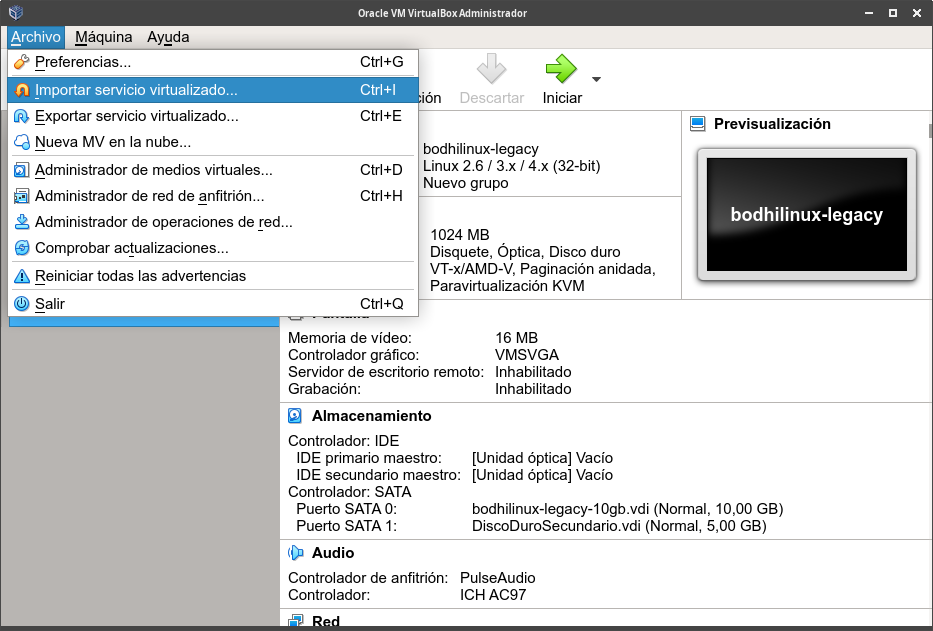
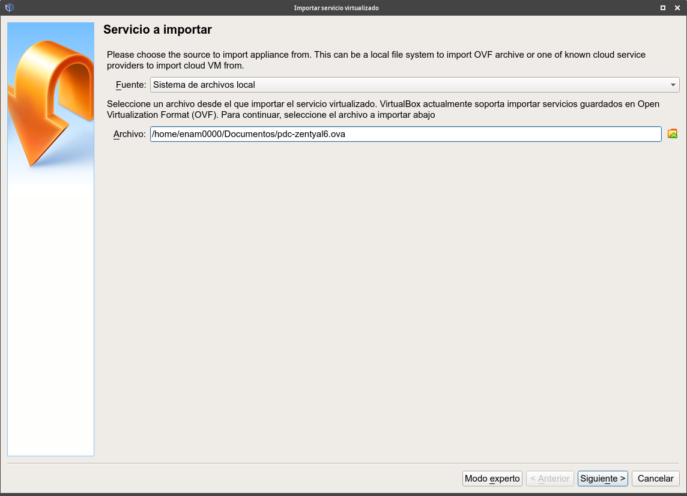
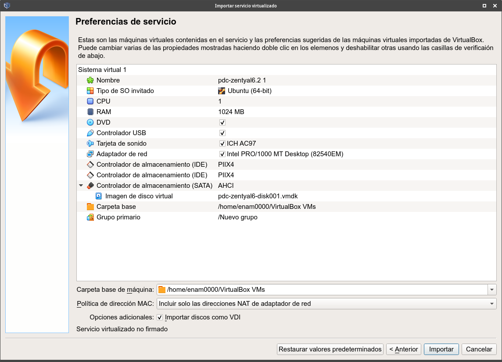
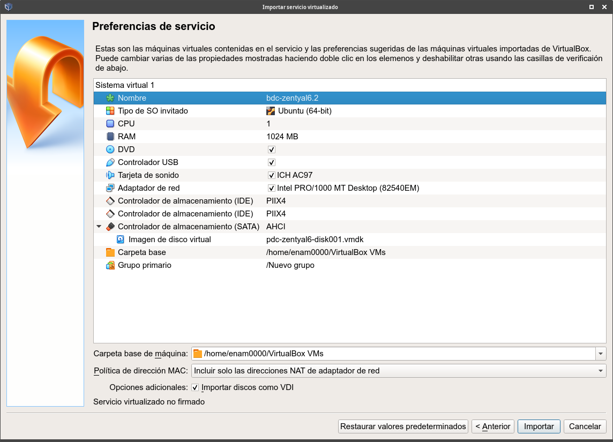
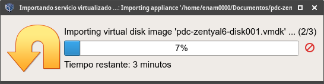
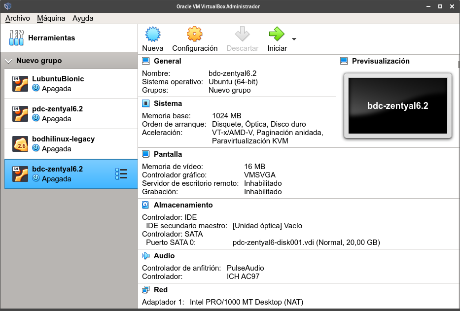

Procedimiento de importación de una máquina virtual
Cuando exportamos una máquina virtual, podemos hacerlo en formato:
- ".ovf": En cuyo caso, obtendremos varios archivos.
- ".ova": En cuyo caso obtendremos un solo archivo con extensión ".ova".
Ese archivo de exportación podemos guardarlo como copia de seguridad para volver a restaurar la máquina en caso de problemas o podemos usarlo para restaurar la máquina virtual en otro equipo diferente.
Para importar una máquina virtual, hacemos clic en el menú "Archivo -> Importar servicio virtualizado...":

Nos abrirá una nueva ventana que nos permitirá seleccionar el archivo de exportación:

Hacemos clic en el icono de la carpeta y se nos abrirá un explorador de archivos en el que buscaremos el archivo de exportación de la máquina virtual que queremos importar:

Una vez seleccionado, hacemos clic en el botón "Siguiente".
Nos mostrará las características de la máquina virtual.

En esta ventana, podemos cambiar cualquiera de los ajustes de la máquina virtual antes de importarla.
Si existe una máquina virtual con el mismo nombre, le añade un 1 porque no puede haber dos máquinas virtuales con el mismo nombre. En ese caso, es conveniente cambiar el nombre para tener uno más descriptivo.
En este ejemplo, voy a restaurar el archivo de exportación pdc-zentyal6.2.ova para implementar un controlador de dominio secundario, modificando la máquina virtual. Así que modificaré el nombre por bdc-zentyal6.2:

Una vez modificados los ajustes que queramos, tan sólo tenemos que hacer clic en el botón "Importar" para que comience el proceso de importación.

Una vez terminado, veremos nuestra máquina en el administrador de VirtualBox:

Con ésto, tendremos una nueva máquina virtual que podremos arrancar y realizar en ella las modificaciones que queramos.